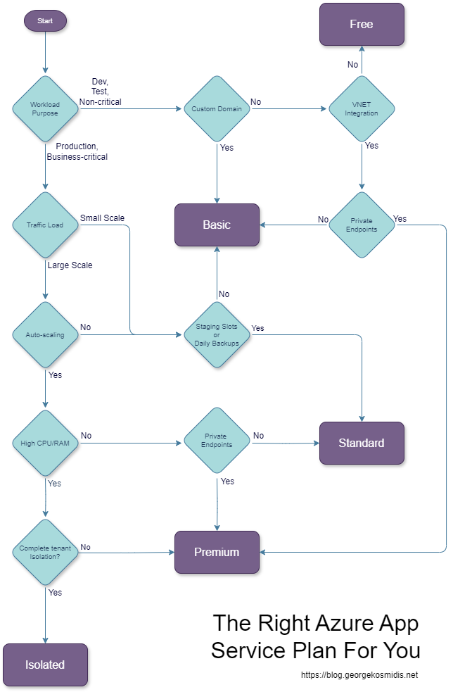

Selecting the right Azure Service Plan is crucial for optimizing performance, cost, and scalability. Whether you're a startup experimenting with cloud services or an enterprise seeking robust solutions, Azure offers a variety of service plans to meet your needs. This guide will help you navigate through the Free, Basic, Standard, Premium, and Isolated tiers, ensuring you make an informed decision.
Follow the arrows on the flowchart below to find your appropriate tier, and then dive into your tier details to select your plan!

Azure App Service Plans determine the resources and features available for your applications. Each tier offers different levels of CPU, RAM, storage, and additional features. Here's a breakdown of what each tier offers:
The Free Tier is perfect for small applications and experimentation. It provides:
| Plan | CPU | RAM | Storage | |------|----------------------------------|------|-------- | | Free | Shared (60 CPU minutes per day) | 1 GB | 1 GB |
This tier is ideal for developers who want to test applications without incurring costs. However, it comes with limitations in terms of performance and features.
The Basic Tier offers more resources and is suitable for small production workloads:
| Plan | CPU | RAM | Storage | |------|---------|--------|----------------| | B1 | 1 Core | 1.75 GB| 10 GB Storage | | B2 | 2 Cores | 3.5 GB | 10 GB Storage | | B3 | 4 Cores | 7 GB | 10 GB Storage |
This tier is designed for applications that require more consistent performance than the Free Tier but do not need advanced features.
The Standard Tier is a great choice for production workloads that require load balancing and auto-scaling:
| Plan | CPU | RAM | Storage | |------|---------|--------|----------------| | S1 | 1 Core | 1.75 GB| 50 GB Storage | | S2 | 2 Cores | 3.5 GB | 50 GB Storage | | S3 | 4 Cores | 7 GB | 50 GB Storage |
With support for custom domains, SSL, and daily backups, this tier is ideal for business applications that need reliability and scalability.
The Premium Tier is tailored for high-traffic applications requiring enhanced performance and advanced features:
| Plan | CPU | RAM | Storage | |------|---------|--------|-----------------| | P1 | 1 Core | 3.5 GB | 250 GB Storage | | P2 | 2 Cores | 7 GB | 250 GB Storage | | P3 | 4 Cores | 14 GB | 250 GB Storage |
This tier offers increased scalability, memory, and storage, making it suitable for large-scale applications with high availability needs.
The Isolated Tier is designed for applications that need to run in a private, dedicated environment:
| Plan | CPU | RAM | Storage | |------|---------|--------|----------------| | I1 | 2 Cores | 8 GB | 1 TB Storage | | I2 | 4 Cores | 16 GB | 1 TB Storage | | I3 | 8 Cores | 32 GB | 1 TB Storage |
This tier provides the highest level of isolation and security, ideal for mission-critical applications that require compliance and data sovereignty.
When choosing a plan, consider the following factors: